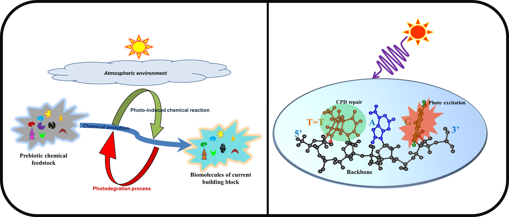

About Me
I completed my bachelor’s degree in Chemistry from Bankura Christian College in West Bengal and my master’s degree in Chemistry from NIT Durgapur, West Bengal. I joined the Ab Initio theory group on 2015 as PhD student.
Research Interest
 DNA absorbs in the UV region of solar spectrum and undergoes several photophysical and photochemical processes which lead to formation of harmful photoproducts like cyclobutane pyrimidine dimers (CPDs), 6-4 photo lesion etc. Enzymatic machineries have evolved which can selectively repair of different types photodamage. Recent findings, however, suggest that the DNA might have built-in mechanisms to protect itself from UV damage. For instance, a recent study demonstrated that a certain oligonucleotide (GATT) has inherent capability to repair CPD lesions. It is also known that the building blocks of the DNA, the nucleobases, are photostable, being able to dissipate energy of electronic excitations in sub-picosecond timescales via ultrafast internal conversion. Photorepair processes operate through electron transfer and/or energy transfer mechanism which generally generally involve non-adiabatic effects. A complete description of these processes in the context of DNA damage and repair is still lacking.
We are studying the photo-induced processes responsible for the photostability of canonical
nucleobases and the mechanism of self-repair in DNA. Using a combination of linear response (LR)
and real time (RT) TDDFT we are able to gain profound insights into these processes.
We are also developing new tools in the context of the RT TDDFT method which allow us to
describe the spatial flow of energy and charge in real time and hence assign the sequence of
events eventually leading to repair.
We are also interested to study the inherent photo stability of canonical nucleobases and
compare their photostability with non-canonical nucleobases which can answer about survival
of canonical nucleobases at harsh conditions during prebiotic time. Here we combine TDDFT
with nonadiabatic surface hopping dynamics to study deactivation mechanism of nucleobases.
We are also working on natural sunscreen molecules to understand the key mechanism behind
their UV protection capability which will help in designing better artificial sunscreen.
Things I Can Do
Skill Set